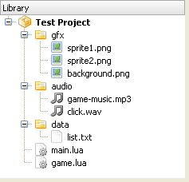
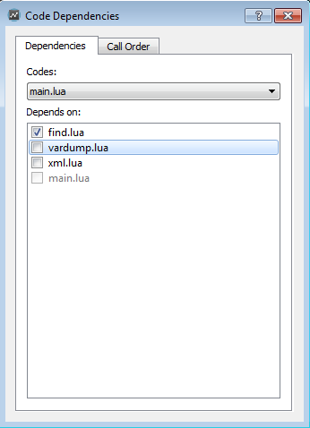

File System
In Gideros runtime, there are 3 kinds of directories: resource, document, and temporary.
Resource directory
Your code, image, audio and all other files are reside at resource directory. The file and folder structure of your asset library shown below

is stored at real device and Gideros Player like:
{resource directory}/gfx/sprite1.png
{resource directory}/gfx/sprite2.png
{resource directory}/gfx/background.png
{resource directory}/audio/game-music.mp3
{resource directory}/audio/click.wav
{resource directory}/data/list.txt
{resource directory}/main.lua
{resource directory}/game.lua
Resource directory is the default directory. Therefore, to access the files at resource directory, specify the file path as it is:
local sprite1 = Texture.new("gfx/sprite1.png")
local sprite2 = Texture.new("gfx/sprite2.png")
local background = Texture.new("gfx/background.png")
local music = Sound.new("audio/game-music.mp3")
local click = Sound.new("audio/click.wav")
Also, you can use the io library provided by Lua:
io.read("data/list.txt")
You don’t need to know the exact path of resource, document and temporary directories because Gideros provides an easy way to specify files at these directories.
Note: Resource directory is read-only and you should not try to write any files there.
Document directory
You can store application created files at document directory.
The files created at document directory is permanent between different application sessions. For example,
you can create and then read files at document directory to save player progress.
To specify a file at document directory, append "|D|" to the begining of the file name:
io.write("|D|save.txt")
Temporary directory
You can create and store temporary files at temporary directory.
The files created at temporary directory are not guaranteed to exists between
different application sessions. They may be deleted after your application
session finishes. To specify a file at temporary directory, append "|T|" to the begining of the file name:
io.write("|T|temp.txt")
Note: Optionally, you can access the files at resource directory by adding "|R|" to the begining of the file name (but you don’t need to):
local sprite1 = Texture.new("|R|gfx/sprite1.png")
To sum up:
io.read("file.txt") --> open file.txt at resource directory to read
io.read("|R|file.txt") --> open file.txt at resource directory to read (same as above)
io.read("|D|file.txt") --> open file.txt at documents directory to read
io.read("|T|file.txt") --> open file.txt at temporary directory to read
Lua Files and Execution Order
Before an Gideros application starts, all Lua files at asset library are executed one by one. It is possible to arrange the order of execution by setting the code dependencies between Lua files.
If you right click a Lua file and select “Code Dependencies…” from popup menu, “Code Dependencies” dialog opens:

In this menu, you can set the dependencies between Lua files. For example,
if a.lua is dependent to b.lua, b.lua is always executed befure a.lua.
If you select “Call Order” tab, you can see the execution order:

Note: The file names main.lua and init.lua have special meaning: When an application starts,
Gideros runtime tries to execute init.lua first and main.lua last.
strict.lua
For the detailed explanation of strict.lua, please refer to http://www.lua.org/pil/14.2.html
strict.lua checks uses of undeclared global variables. If strict.lua is executed, all global
variables must be ‘declared’ through a regular assignment (even assigning nil will do) in a main
chunk before being used anywhere or assigned to inside a function. Although optional, it is a
good habit to use it when developing Lua code.
To execute strict.lua before all other Lua files, simply add strict.lua and init.lua to
asset library and make strict.lua dependent to init.lua.
You can download strict.lua from here that originally comes with the Lua distribution.